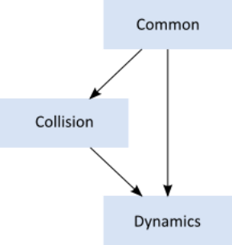
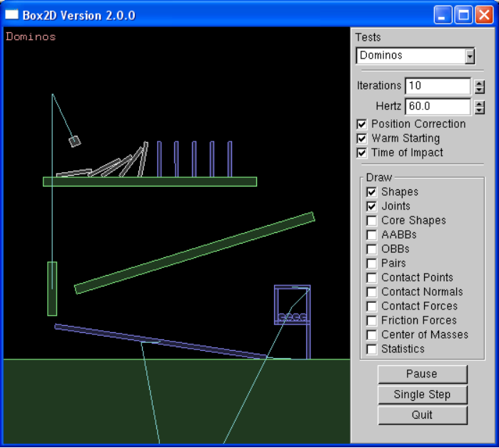

Box2D 是一个用于游戏的 2D 刚体模拟库。 程序员可以在他们的游戏中使用它来使对象以逼真的方式移动，并使游戏世界更具交互性。 从游戏引擎的角度来看，物理引擎只是一个程序动画系统。
Box2D 是用可移植的 C++ 编写的。 引擎中定义的大多数类型都以 b2 前缀开头。 希望这足以避免名称与您的游戏引擎发生冲突。
在本手册中，我假设您熟悉基本的物理概念，例如质量、力、扭矩和冲量。 如果没有，请先咨询谷歌搜索和维基百科。
Box2D 是在游戏开发者大会上作为物理教程的一部分创建的。 您可以从 box2d.org 的下载部分获取这些教程。
由于 Box2D 是用 C++ 编写的，因此您应该具备 C++ 编程经验。 Box2D 不应该是您的第一个 C++ 编程项目！ 您应该熟悉编译、链接和调试。
警告
Box2D 不应该是您的第一个 C++ 项目。 在使用 Box2D 之前，请先学习 C++ 编程、编译、链接和调试。 网上有很多这方面的资源。.
本手册涵盖了 Box2D API 的大部分内容。 但是，并非涵盖所有方面。 我们鼓励您查看 Box2D 附带的测试平台以了解更多信息。 此外，Box2D 代码库具有针对 Doxygen 格式化的注释，因此很容易创建超链接 API 文档。
本手册仅随新版本更新。 源代码管理中的版本可能已过时。
如果您对 Box2D 有任何问题或反馈，请在论坛中发表评论。 这也是社区讨论的好地方。
Box2D 问题使用 Google 代码项目进行跟踪。 这是跟踪问题并确保您的问题不会在论坛深处丢失的好方法。
请在此处提交错误和功能请求：http://code.google.com/p/box2d/
如果您提供足够的详细信息，您可以帮助确保您的问题得到解决。 重现问题的测试平台示例是理想的。 您可以在本文档后面阅读有关测试平台的信息。
Box2D 与几个基本概念和对象一起工作。 我们在这里简要定义了这些对象，更多细节在本文档后面给出。
Shape是2D几何对象，例如圆形或者多边形。
rigid body
一块如此坚固的物质，以至于该块上任何两块物质之间的距离都是恒定的。 它们像钻石一样坚硬。 在下面的讨论中，我们将 body 与刚体互换使用。
fixture
夹具将形状绑定到实体并添加材料属性，例如密度、摩擦力和恢复力。 夹具将形状放入碰撞系统（宽相位），以便它可以与其他形状发生碰撞。
constraint
约束是一种物理连接，它消除了物体的自由度。 一个 2D 物体有 3 个自由度（两个平移坐标和一个旋转坐标）。 如果我们将一个物体固定在墙上（如钟摆），我们将物体约束在墙上。 此时主体只能绕销旋转，因此约束已移除 2 个自由度。
contact constraint
一种特殊约束，旨在防止刚体穿透并模拟摩擦和恢复。 您不创建接触约束； 它们由 Box2D 自动创建。
joint
这是用于将两个或多个实体保持在一起的约束。 Box2D 支持多种关节类型：旋转、棱柱、距离等。 一些关节可能有限制和马达。
joint limit
关节限制限制了关节的运动范围。 例如，人的肘部只允许一定范围的角度。
joint motor
关节电机根据关节的自由度驱动连接体的运动。 例如，您可以使用电机来驱动肘部旋转。
world
物理世界是相互作用的物体、固定装置和约束的集合。 Box2D 支持创建多个世界，但这通常不是必需的或不可取的。
solver
物理世界有一个solver，用于推进时间并解决接触和关节约束。 Box2D solver是一种高性能迭代求解器，按 N 次运行，其中 N 是约束的数量。
continuous collision
solver使用离散时间步长在时间上推进物体。 如果没有干预，这可能会导致隧道效应。
Box2D 包含专门的算法来处理隧道。 首先，碰撞算法可以对两个物体的运动进行插值，以找到第一次碰撞 (TOI)。 其次，有一个分步求解器将物体移动到它们的第一次撞击，然后解决碰撞。
Box2D由三个模块组成：Common、Collision和Dynamics。 公共模块具有分配、数学和设置的代码。 碰撞模块定义形状、宽相位和碰撞函数/查询。 最后，Dynamics 模块提供了模拟世界、实体、夹具和关节。

Box2D 与浮点数一起工作，必须使用容差才能使 Box2D 表现良好。 这些公差已经过调整，可以很好地与米-千克-秒 (MKS) 单位配合使用。 特别是，Box2D 已经过调整，可以很好地处理 0.1 到 10 米之间的移动形状。 所以这意味着汤罐和公共汽车之间的物体大小应该可以正常工作。 静态形状最长可达 50 米，没有任何问题。
作为 2D 物理引擎，使用像素作为单位是很诱人的。 不幸的是，这将导致不良的模拟和可能的奇怪行为。 Box2D 会将长度为 200 像素的对象视为 45 层建筑的大小。
警告
Box2D 针对 MKS 单元进行了调整。 将移动物体的大小保持在大约 0.1 到 10 米之间。 渲染环境和演员时，您需要使用一些缩放系统。 Box2D 测试台通过使用 OpenGL 视口变换来实现这一点。 不要使用像素。
最好将 Box2D 实体视为移动的广告牌，您可以在其上附加您的作品。 广告牌可能以米为单位移动，但您可以使用简单的比例因子将其转换为像素坐标。 然后，您可以使用这些像素坐标来放置您的精灵等。您还可以考虑翻转坐标轴。
Box2D 使用弧度表示角度。 身体旋转以弧度存储，并且可以无限增长。 如果角度的大小变得太大，请考虑对身体的角度进行归一化（使用 b2Body::SetAngle）。
警告
Box2D 使用的是弧度，而不是度数。
快速内存管理在 Box2D API 的设计中起着核心作用。 所以当你创建一个 b2Body 或一个 b2Joint 时，你需要调用 b2World 上的工厂函数。 您永远不应该尝试以其他方式分配这些类型。
有创建函数：
b2Body* b2World::CreateBody(const b2BodyDef* def)
b2Joint* b2World::CreateJoint(const b2JointDef* def)
并且有对应的销毁函数：
void b2World::DestroyBody(b2Body* body)
void b2World::DestroyJoint(b2Joint* joint)
创建实体或关节时，需要提供定义。 这些定义包含构建身体或关节所需的所有信息。 通过使用这种方法，我们可以防止构造错误，保持函数参数的数量较少，提供合理的默认值，并减少访问器的数量。
由于fixtures（shapes）必须是body的父对象，所以它们是使用b2Body上的工厂方法创建和销毁的：
b2Fixture* b2Body::CreateFixture(const b2FixtureDef* def)
void b2Body::DestroyFixture(b2Fixture* fixture)
还有直接从形状和密度创建fixture的捷径。
b2Fixture* b2Body::CreateFixture(const b2Shape* shape, float32 density)
工厂不保留对定义的引用。 因此，您可以在堆栈上创建定义并将它们保存在临时资源中。
在 Box2D 的发行版中是一个 Hello World 项目。 该程序创建了一个大的地面盒子和一个小的动态盒子。 此代码不包含任何图形。 随着时间的推移，您将看到的只是框位置的控制台中的文本输出。
这是一个很好的例子，说明如何使用 Box2D 启动和运行。
每个 Box2D 程序都从创建 b2World 对象开始。 b2World 是管理内存、对象和模拟的物理中心。 您可以在堆栈、堆或数据部分分配物理世界。
创建 Box2D 世界很容易。 首先，我们定义重力矢量。
b2Vec2 gravity(0.0f, -10.0f);
现在我们创建世界对象。 请注意，我们正在堆栈上创建世界，因此世界必须保持在范围内。
b2World world(gravity);
所以现在我们有了我们的物理世界，让我们开始向它添加一些东西。
使用以下步骤构建主体：
1.定义具有位置、阻尼等的物体。
2.使用世界对象创建身体。
3.定义具有形状、摩擦力、密度等的夹具。
4.在车身上创建固定装置。
对于第 1 步，我们创建地面主体。 为此，我们需要一个主体定义。 通过body定义，我们指定了ground body的初始位置。
b2BodyDef groundBodyDef;
groundBodyDef.position.Set(0.0f, -10.0f);
对于第 2 步，将主体定义传递给世界对象以创建地面主体。 世界对象不保留对主体定义的引用。 默认情况下，实体是静态的。 静态物体不会与其他静态物体发生碰撞并且是不可移动的。
b2Body* groundBody = world.CreateBody(&groundBodyDef);
对于第 3 步，我们创建一个地面多边形。 我们使用 SetAsBox 快捷方式将地面多边形形成一个盒子形状，盒子以父体的原点为中心。
b2PolygonShape groundBox;
groundBox.SetAsBox(50.0f, 10.0f);
SetAsBox 函数采用半宽和半高（范围）。所以在这种情况下，地面盒的宽度为 100 个单位（x 轴），高度为 20 个单位（y 轴）。 Box2D 针对米、千克和秒进行了调整。因此，您可以考虑以米为单位的范围。 Box2D 通常在对象与典型现实世界对象大小相同时效果最佳。例如，一个桶大约有 1 米高。由于浮点运算的限制，使用 Box2D 来模拟冰川或尘埃颗粒的运动并不是一个好主意。
我们通过创建形状夹具在步骤 4 中完成地面主体。对于这一步，我们有一个快捷方式。我们不需要更改默认的夹具材料属性，因此我们可以直接将形状传递给主体，而无需创建夹具定义。稍后我们将看到如何为自定义材料属性使用夹具定义。第二个参数是以千克每平方米为单位的形状密度。根据定义，静态物体的质量为零，因此在这种情况下不使用密度。
groundBody->CreateFixture(&groundBox, 0.0f);
Box2D 不保留对形状的引用。 它将数据克隆到一个新的 b2Shape 对象中。
请注意，每个夹具都必须有一个父体，即使是静态的夹具。 但是，您可以将所有静态装置附加到单个静态主体。
当您使用夹具将形状附加到身体时，形状的坐标将成为身体的局部坐标。 因此，当身体移动时，形状也会移动。 夹具的世界变换是从父体继承的。 固定装置没有独立于主体的变换。 所以我们不会在身体上移动一个形状。 不支持移动或修改实体上的形状。 原因很简单：具有变形形状的物体不是刚体，但 Box2D 是刚体引擎。 Box2D 中的许多假设都是基于刚体模型。 如果违反这一点，很多事情都会崩溃。
所以现在我们有了一个接地体。 我们可以使用相同的技术来创建动态主体。 除了尺寸之外，主要区别在于我们必须建立动态物体的质量属性。
首先，我们使用 CreateBody 创建主体。 默认情况下，body 是静态的，所以我们应该在构造时设置 b2BodyType 以使 body 动态。
b2BodyDef bodyDef;
bodyDef.type = b2_dynamicBody;
bodyDef.position.Set(0.0f, 4.0f);
b2Body* body = world.CreateBody(&bodyDef);
我们能否打开手机发
警告
如果您希望身体响应力而移动，则必须将身体类型设置为 b2_dynamicBody。
接下来，我们使用夹具定义创建并附加多边形形状。 首先我们创建一个盒子形状：
b2PolygonShape dynamicBox;
dynamicBox.SetAsBox(1.0f, 1.0f);
接下来我们使用盒子创建一个夹具定义。 请注意，我们将密度设置为 1。默认密度为零。 此外，形状上的摩擦力设置为 0.3。
b2FixtureDef fixtureDef;
fixtureDef.shape = &dynamicBox;
fixtureDef.density = 1.0f;
fixtureDef.friction = 0.3f;
警告
一个动态物体应该至少有一个具有非零密度的夹具。 否则你会得到奇怪的行为。
使用夹具定义，我们现在可以创建夹具。 这会自动更新身体的质量。 您可以向主体添加任意数量的固定装置。 每一个都对总质量有贡献。
body->CreateFixture(&fixtureDef);
这就是初始化。 我们现在准备开始模拟。
所以我们已经初始化了ground box和一个动态box。 现在我们已经准备好放开牛顿去做他的事了。 我们还有几个问题需要考虑。
Box2D 使用一种称为积分器的计算算法。 积分器在离散时间点模拟物理方程。 这与传统的游戏循环相吻合，我们在屏幕上基本上有一本翻书。 所以我们需要为 Box2D 选择一个时间步长。 通常，游戏的物理引擎喜欢时间步长，至少快 60Hz 或 1/60 秒。 您可以使用更大的时间步长，但您必须更加小心地为您的世界设置定义。 我们也不喜欢时间步改变太多。 可变的时间步长会产生可变的结果，这使得调试变得困难。 所以不要将时间步与你的帧速率联系起来（除非你真的，真的必须）。 事不宜迟，这里是时间步长。
float32 timeStep = 1.0f / 60.0f;
除了积分器，Box2D 还使用了一个更大的代码位，称为约束求解器。约束求解器一次求解模拟中的所有约束。一个单一的约束就可以完美解决。但是，当我们解决一个约束时，我们会稍微破坏其他约束。为了得到一个好的解决方案，我们需要多次迭代所有约束。
约束求解器有两个阶段：速度阶段和位置阶段。在速度阶段，求解器计算物体正确移动所需的冲量。在位置阶段，求解器调整实体的位置以减少重叠和关节脱离。每个阶段都有自己的迭代次数。此外，如果误差很小，位置阶段可能会提前退出迭代。
Box2D 的建议迭代次数是速度为 8 次，位置为 3 次。您可以根据自己的喜好调整此数字，但请记住，这需要在性能和准确性之间进行权衡。使用更少的迭代可以提高性能，但准确性会受到影响。同样，使用更多迭代会降低性能，但会提高模拟质量。对于这个简单的例子，我们不需要太多的迭代。这是我们选择的迭代次数。
int32 velocityIterations = 6;
int32 positionIterations = 2;
请注意，时间步长和迭代次数完全不相关。 迭代不是子步骤。 一次求解器迭代是在一个时间步内单次遍历所有约束。 您可以在单个时间步内多次通过约束。
我们现在准备开始模拟循环。 在您的游戏中，模拟循环可以与您的游戏循环合并。 在每次通过游戏循环时，您调用 b2World::Step。 通常只需一个调用就足够了，具体取决于您的帧速率和物理时间步长。
Hello World 程序设计得很简单，因此它没有图形输出。 代码打印出动态体的位置和旋转。 这是模拟 60 个时间步长的模拟循环，模拟时间总共为 1 秒。
for (int32 i = 0; i < 60; ++i)
{
world.Step(timeStep, velocityIterations, positionIterations);
b2Vec2 position = body->GetPosition();
float32 angle = body->GetAngle();
printf("%4.2f %4.2f %4.2f\n", position.x, position.y, angle);
}
输出显示盒子掉落并降落在地面盒子上。 您的输出应如下所示：
0.00 4.00 0.00
0.00 3.99 0.00
0.00 3.98 0.00
...
0.00 1.25 0.00
0.00 1.13 0.00
0.00 1.01 0.00
当一个世界离开作用域或通过在指针上调用 delete 被删除时，为实体、固定装置和关节保留的所有内存都将被释放。 这样做是为了提高性能并使您的生活更轻松。 但是，您需要使您拥有的任何主体、夹具或关节指针无效，因为它们将变得无效。
一旦你征服了 HelloWorld 示例，你应该开始查看 Box2D 的测试平台。 测试平台是一个单元测试框架和演示环境。 以下是一些功能：
•带有平移和缩放功能的相机。
•鼠标拾取附加到动态物体的形状。
• 可扩展的测试集。
•用于选择测试、参数调整和调试绘图选项的GUI。
•暂停和单步模拟。
•文本渲染。

测试平台在测试用例和框架本身中有许多 Box2D 使用示例。 我鼓励您在学习 Box2D 时探索和修改测试平台。
注意：测试平台是使用 freeglut 和 GLUI 编写的。 测试台不是 Box2D 库的一部分。 Box2D 库与渲染无关。 如 HelloWorld 示例所示，您不需要渲染器即可使用 Box2D。